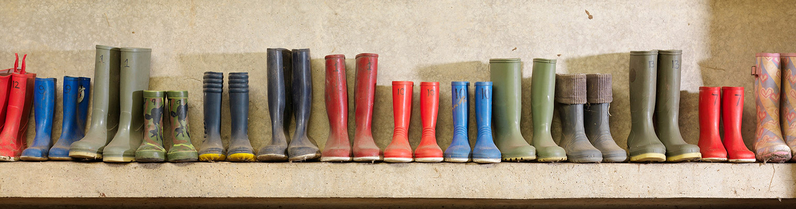

Inclusion
We value difference. Diverse ideas and perspectives helping us to innovate, grow and deliver good outcomes for our customers, colleagues and communities.
Aligned to HSBC’s global approach, HSBC UK’s inclusion strategy is focused on three Rs: Representation, Respect and Reputation.
DownloadLearn more about HSBC UK’s Inclusion Strategy (PDF 12.4MB)
Learn more about HSBC’s global approach to inclusion Opens in new window
Building a more inclusive culture
We want HSBC UK to be a place where people from a wide range of backgrounds and experiences work feeling valued, respected and supported to fulfil their full potential.
This includes ensuring our processes are fair, transparent and inclusive for all, so that every candidate and every colleague, regardless of their identity or background, has an opportunity to demonstrate their skill and potential.
Our actions:
- We want everyone to be at their best, so we actively promote flexibility, collaboration, learning and wellbeing. We’ve embraced hybrid working across our teams, providing flexibility around when and where work gets done.
- Our recruiting managers receive training on how to counteract potential biases when recruiting, and we take steps to ensure our doors are open to talented people whatever their background.
- We have a wide range of mentoring programmes, and everyone who works for HSBC has access to hundreds of free courses virtually and in person through HSBC University, to help them grow their career.
- We understand that colleagues with disabilities may require different ways of working, and we have a dedicated workplace adjustments service to assist any colleague with long term physical and mental health conditions or disabilities to access assistive technology or equipment to help them do their job.
- We have an active network of Employee Resource Groups Opens in new window that provide opportunity for colleagues with shared characteristics or common interests to come together, find support, champion awareness, and get involved in conversations about our business.
- We provide an attractive maternity/adoption/paternity policy: primary carer (maternity/adoption) leave of 26 weeks fully paid, and secondary carer (paternity) fully paid leave of four weeks. Employees can also take advantage of shared parental leave, with up to 26 weeks on full pay.
- We’re building a more transparent view of our ways of working so we can effectively target our actions and measure our progress. This includes publicly reporting Opens in new window UK pay gaps for gender, ethnicity and disability.
- We are committed to the fair treatment of the businesses who supply goods and services to HSBC UK and expect them to operate responsibly, in line with our values. To encourage inclusion within our supply chain we have created a Supplier Inclusion Portal Opens in new window to help us achieve this ambition.
HSBC UK Inclusion Strategy 2025
Awards & Highlights
- #18 in the 2024 Top 75 Employer Social Mobility Foundation’s Index
- Business Disability Forum (BDF) Gold
- Carer Confident Employer
- Disability Confident Leader
- Founding member of the Women in Finance Charter
- Gold Standard in the Military Covenant
Making banking more inclusive for our customers
We are committed to delivering a good service to our customers. From the day-to-day to major life events, we want to be there to support customers with their banking needs.
Working with others across communities
HSBC UK works with a wide range of organisations who share our commitment to inclusion, improving and amplifying the impact of initiatives and programmes for our people, customers and the wider communities we serve.
We also measure ourselves against the high standards set by experts and industry benchmarks so that we can continuously develop and improve.
-
Business Disability Forum
We are a proud partner of the Business Disability Forum (BDF) Opens in new window. HSBC UK uses the BDF’s Disability Standard to measure and improve on performance for disabled colleagues, customers, service providers and stakeholders more broadly. -
Carers UK
Through our work with Carers UK we have achieved the Carer Confident Standard Opens in new window. This certificate of achievement is presented to employers who have demonstrated that they have built an inclusive workplace where carers are recognised, respected and supported. -
Disability Confident Leader
HSBC UK is a Disability Confident Employer within the Department for Work and Pensions Disability Confident Scheme Opens in new window. Through our dedicated workplace adjustments programme, we make reasonable adjustments available to colleagues who need them. -
Investing in Ethnicity
HSBC UK was recognised as the top organisation in the Maturity Matrix Opens in new window 2024 – an invaluable tool to help us track progress, identify gaps, and set plans to improve. -
Menopause Friendly UK
HSBC UK was one of the first employers in the UK to receive Menopause Friendly Accreditation Opens in new window, recognising our efforts to build awareness and understanding around menopause and take the wellbeing of our colleagues seriously. -
#Merky
HSBC has pledged £4m to the #Merky Foundation to support 60 new Stormzy Scholars at the University of Cambridge Opens in new window over five years (2021-25), helping remove barriers to higher education as part of our wider commitment to support racial equality in the UK. -
National Diversity Awards
HSBC UK is proud to be the Headline Sponsor of the National Diversity Awards Opens in new window – recognising individuals and groups across the UK who are making a positive impact in their organisations and communities. -
Progress Together
HSBC UK has partnered with Progress Together to create VOICE Opens in new window – a blueprint for inclusion in financial services. -
Social Mobility Index
In 2023, HSBC entered the Social Mobility Index Opens in new window for the first time and gained recognition as a Top 75 employer. -
Stonewall Workplace Equality Index
HSBC UK was third overall in the Stonewall Workplace Equality Index 2024 - rising nine places from the previous year. -
Women in Finance Charter
We are signatories of the HM Treasury Women in Finance Charter Opens in new window, and committed to the Charter’s aims.